Every Goodwill
Designing a textile donation service with a mobile-first responsive web interface
-
Problematic Fast Fashion
-
The term “fast fashion” refers to a manufacturing and marketing method that focuses on rapidly producing high volumes of trendy clothing at low cost. Over the years, this business model has been highly profitable, but immensely costly to the environment. For those who enjoy having a transient closet, a commonly recommended alternative to purchasing fast fashion items is thrifting second hand pieces while selling and/or recycling unwanted pieces of clothing. This creates a cycle of textile use instead of a one way stream of textiles from the factory to the landfill. Currently, thrifting and selling clothes is not easily accessible through one platform.
"Americans are blithely trashing more clothes than ever. In less than 20 years, the volume of clothing Americans toss each year has doubled from 7 million to 14 million tons, or an astounding 80 pounds per person."
— Newsweek Magazine (2016)
-
A Goodwill Solution
-
To address this gap, my team and I designed Every Goodwill, a service and responsive web application that enables users to easily enter into and continue through this textile reuse cycle. Our service solution creates value for several stakeholders including the business owner, service employee, and customer through incentivizing textile recycling, increasing the size of the regular customer base, and promoting Goodwill’s mission to empower their employees. More over the solution implements AR on a web-based platform to increase efficiency and accessibility.
- 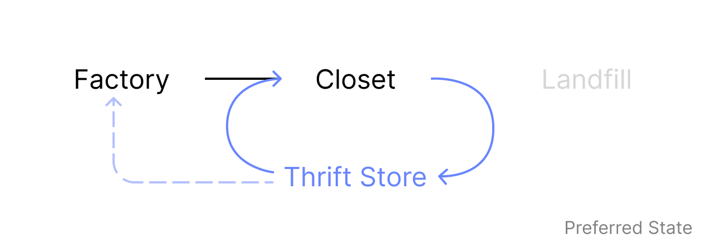
-
Guerilla Research and personas
-
We performed quick observe and intercept interviews with a variety of second-hand store managers and customers. We found that:
-
People are apprehensive about textile recycling.
-
Employees enjoy the donation sorting process, but find that it can be messy at times due to the lack of donation curation.
-
There exists a thrill to finding that "one of a kind" piece.
-
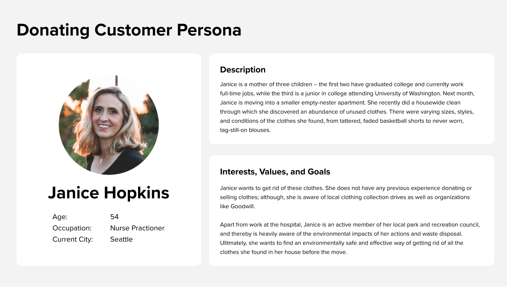
Persona 1
-
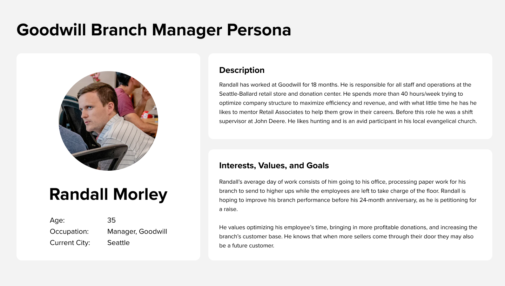
Persona 2
-
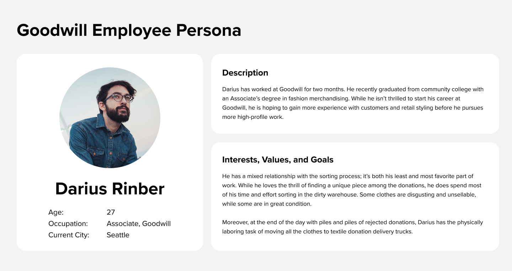
Persona 3
-
Understanding a customer’s journey and an employee’s journey
- From these personas and the interviews, we constructed journey maps to visualize how our users engaged with the clothing donation process.
-
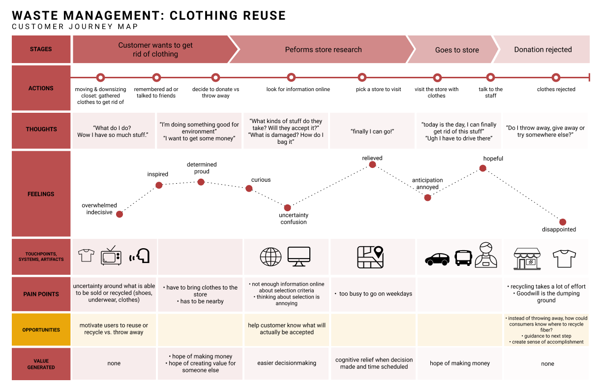
Persona 3
-
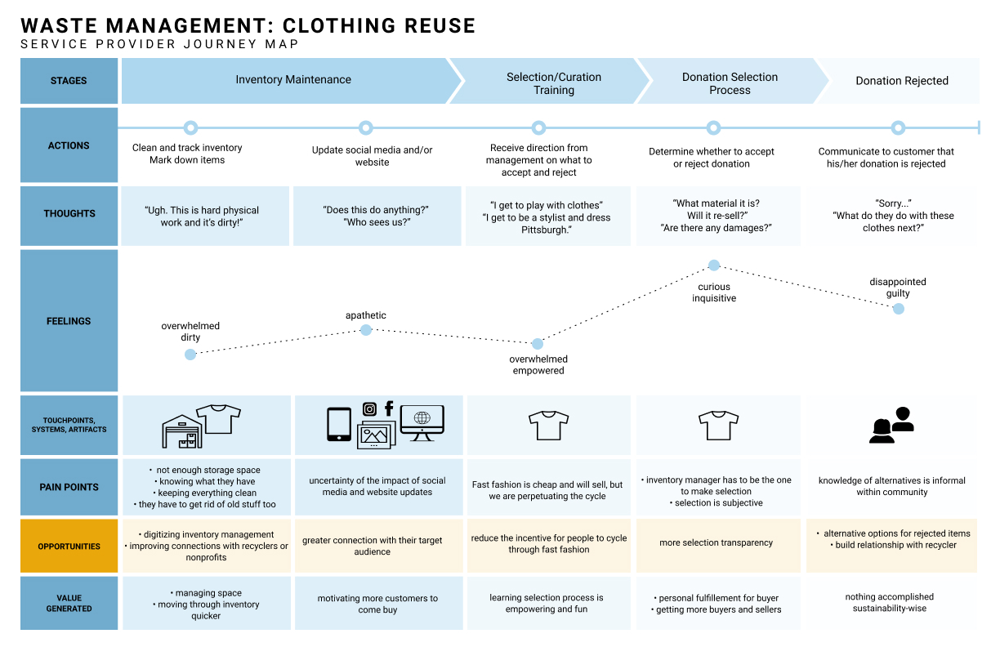
Persona 3
-
We uncovered several insights which shaped our solution:
Insight 1
- Prospective donators are uncertain about what is accepted
Insight 2
- Donating is perceived to be a lot of effort
Insight 3
- There exists an excitement in employees and customers alike of finding unique pieces.
Insight 4
- There exists a lack of trust in Goodwill's sustainability practices.
- We wanted to focus our solution on education, customer acquisition and retention, and donation automation.
-
Speed dating storyboards of potential solutions
-
Addressing these insights, we created scenarios and storyboards with our users’ pain points and motivations in mind. We asked ourselves:
How we might increase the volume of textiles for reuse and recycle through streamlining the donation process for both customers and employees and incentivizing frequent donations?
- 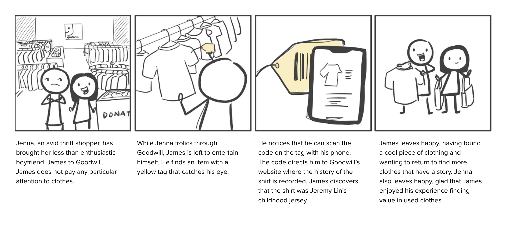
- 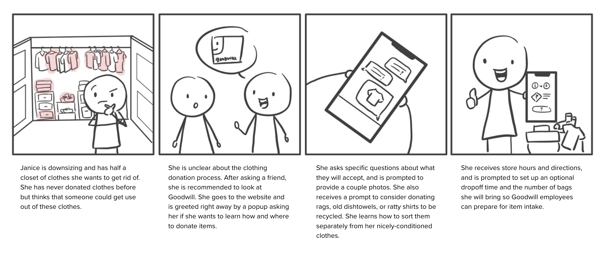
- 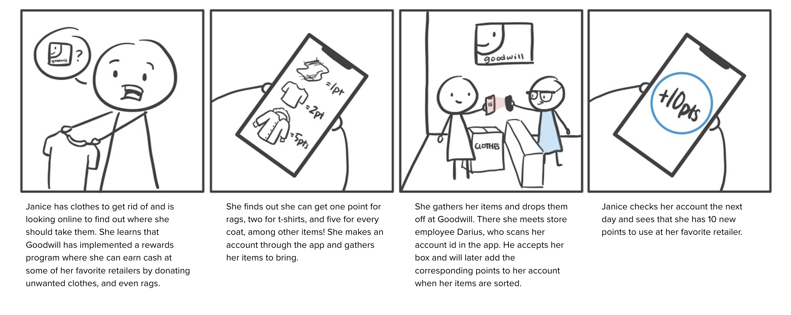
-
We began tinkering with how we could leverage AR technologies to streamline this donation process in a way that benefits both the user and the employee. In this exploration we ideated a solution that uses AR technology to identify what type of textile the user is bringing in, its condition, color, and other meta data that can be automatically entered into a centralized Goodwill inventory. Not only does this save time for the user and the employee but it allows us to create a centralized platform that lists all clothing pieces at surrounding Goodwills. This is particularly helpful for the thrifty shopper who is on the hunt for a specific piece, while still maintaining a local thrifting experience.
-
Prototyping a mobile-first experience
- We determined that our solution was to be a web-based platform so that any web user can access it. Additionally, as we began prototyping, we took a “mobile-first” approach by creating mobile screens first in order to accommodate for the smaller screen size, then expanding to desktop — ensuring that we could fit all the necessary components into a mobile screen.
-
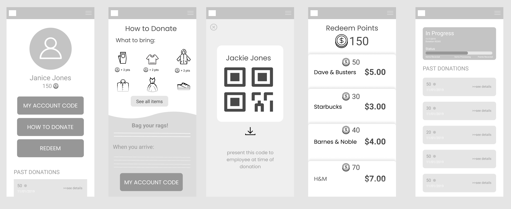
Customer Mobile Lofi
-
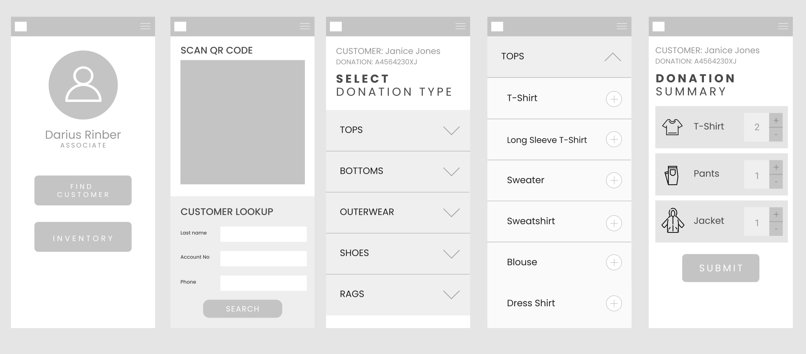
Employee Mobile Lofi
-
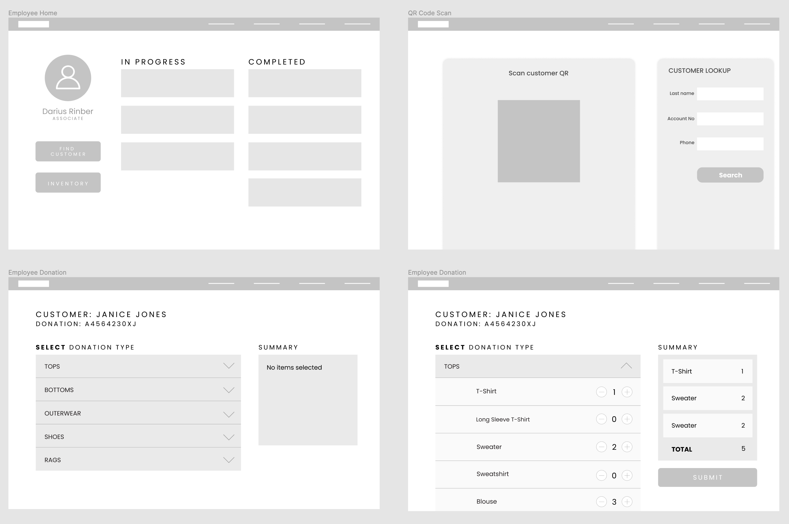
Desktop Lofi
-
Higher Fidelity Screens
- After determining the information architecture and layout of the website, we introduced color and increased the overall fidelity of the prototype.
- 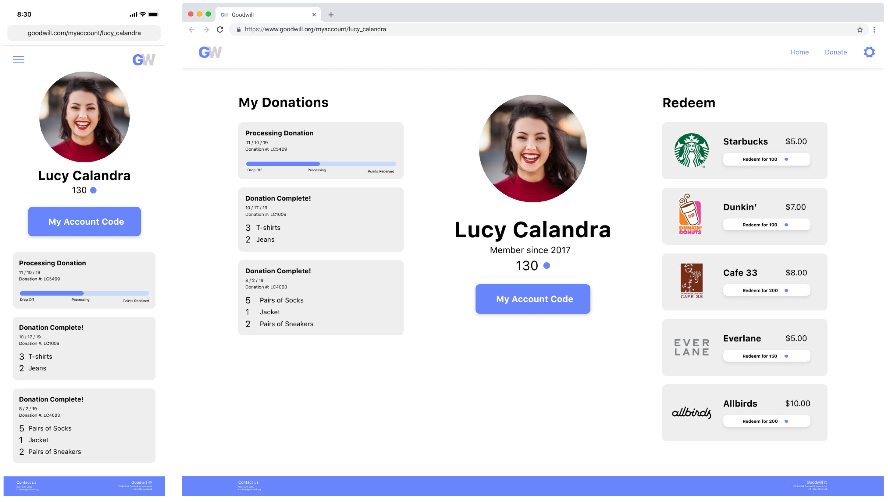
- 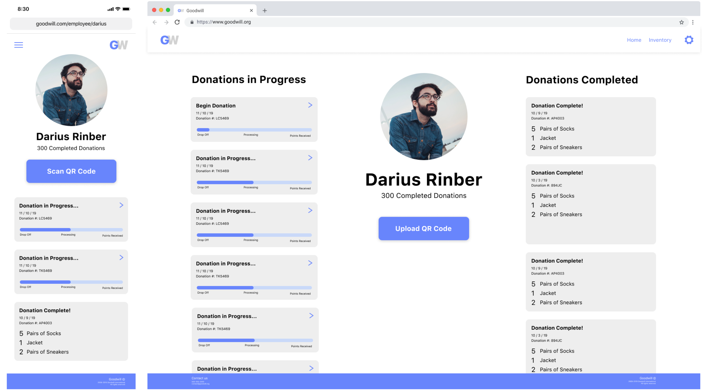
-
Next Steps
- Having come back to this project a year later, I’ve learned several interface design principles through study and practice and look forward to employing what I learned in redesigning this interface. See the beginnings of it below:
- 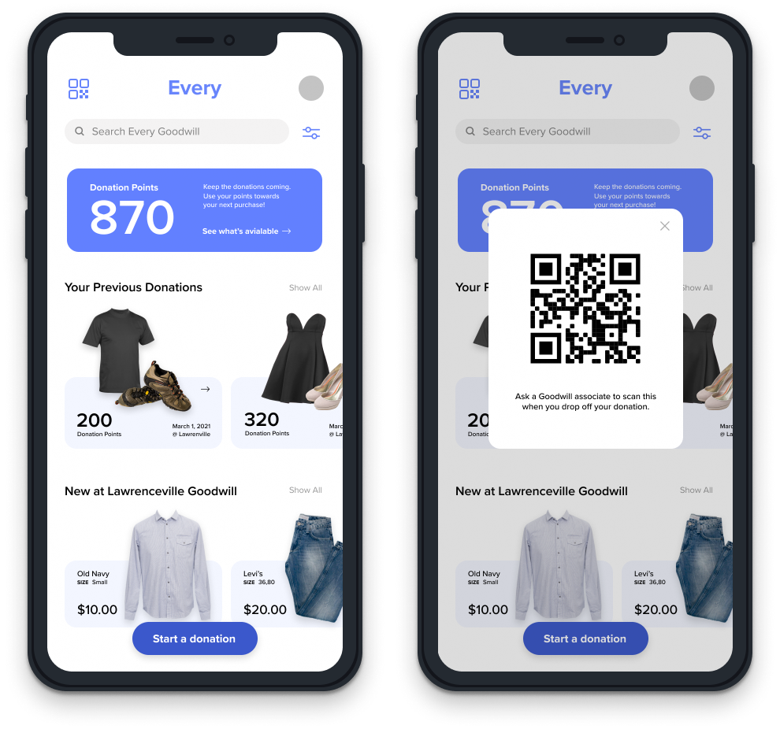
-
What I Learned
-
From a technical standpoint, I learned quite a few things. First, I found that it doesn't require much to get rich information from users — an entire study doesn't have to be conducted in order to find prevalent pain points in people's lives. Sometimes informal interviews reveal a great deal about a problem space. I also learned how closely knit digital product design and service design are, that the best digital products acknowledge and play off of the larger service scope in which they exists.
But my favorite part of this project was the guerilla research we did. My users are often my greatest collaborators. I loved talking with people about how they love thrift shopping, telling me stories of this amazing piece they found out in Squirrel Hill, Pittsburgh or the problems they face every time they go to a Goodwill. It's these conversations that fuel me to create the best solution for them — to help them enjoy the things they love and live better lives.